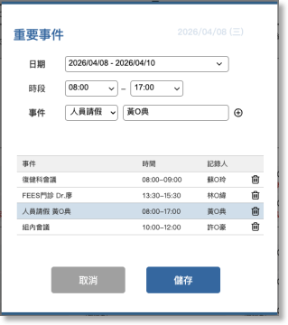

02-3-1 新增/刪除/修改單位重要事件

項目

內容

說明

點選記錄日期

yyyy/mm/dd (星期)

在視窗右上角顯示點擊記錄的日期
日期

日期元件

可設定起、迄日期，若有設定日期區間，在課表看版中需確實記錄。

時段

時間元件
可設定起、迄時間，若有設定時間區間，在課表看版中需確實記錄。

事件

下拉選項+文字輸入框

選項
- 復健科科會
- 動員月會
- 單位在職教育
- 吞嚥團隊會議
- 單位會議
- 組內會議
- FEES住院
- FEES 門診
- MBS住院
- MBS門診
- 人員請假
- 其他，必填後方文字輸入框

新增事件

按鈕

將上述事件、時間、記錄人儲存成一筆資料到下方當日事件記錄中

當日事件記錄
事件
時間
記錄人
刪除按鈕
當日重要事件依時段早排列到晚
